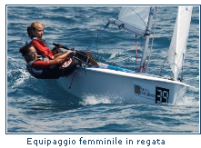
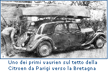

CLASSE VAURIEN di Luigi Candela
INTRODUZIONE
La conoscenza del Vaurien inizia quando entrai a far parte della Società Canottieri Palermo come socio atleta nel 1974. Il mio istruttore Girolamo De Franchis fu uno dei promotori di questa classe presso il suo circolo.
Dal libro storico della Società Canottieri Palermo: " Le prime barche acquistate dai soci furono i Flying Junior ma il vero inizio del boom della vela alla Canottieri si ebbe per iniziativa di Girolamo De Franchis, il quale acquistò il primo Vaurien, ma fece si che nel giro di alcuni mesi a Palermo si formasse una flotta di circa 10 - 15 imbarcazioni di tale tipo."
La prima di queste derive, quella di De Franchis, si trova oggi al Museo del Mare della città di Palermo.
Ma nonostante una cospicua flotta fosse presente alle regate sociali, il direttore sportivo mi affidò un 420 nuovo.
Passarono diversi anni, dal 1974 al 1987, quando approdai all'isola d'Elba per avere un contatto e una conoscenza reale di questa deriva. Infatti nel 1987 mi trovavo a Casa di Vela, una delle più prestigiose scuole italiane, a gestire 15 Vaurien tutti in legno del Cantiere Gavazzi.
Scoprii le sue qualità marine e didattiche giorno per giorno passando due stagioni veliche.
STORIA
Il Vaurien è un monotipo progettato nel 1951 da Jean-Jacques Herbulot, celebre architetto e navigatore.
Fu concepito per essere realizzato in compensato marino, leggero, economico, minimalista, adatto alle scuole di vela e ai principianti.
Philippe Vianney cercava una deriva per la sua scuola presso le isole Glenans a sud della Bretagna sull'oceano Atlantico. Doveva essere molto marina e meno cara possibile: gli sembrò corretto il prezzo equivalente a quello di due biciclette. Nel 1952 il Vaurien costava quindi 55.000 franchi.
Il primo Vaurien fu costruito nel salotto di casa Vianney e il nome fu scelto in omaggio al nome del cane di casa.
Questa pratica deriva divenne una delle più importanti barche-scuola del mitico Centro Nautico Glenans.
Nel 1965 il Vaurien era la deriva feticcio dei francesi e si convertiva alla costruzione poliestere: "se la citroen 2CV ha messo in strada i francesi, il vaurien li ha messi in mare".
Questa classe si diffuse in Europa e in Africa raggiungendo quasi le 40.000 unità (registrate). I paesi dove si svolge attività sono: Angola, Austria, Belgio, Francia, Germania, Italia, Luxemburg, Olanda, Portogallo, Spagna, Svizzera e, da poco, USA.
Quando venne lanciato sul mercato francese si scriveva sulle riviste specializzate: "Vaurien - La révolution de la voile pour tous"
Tra i nomi della vela mondiale che hanno regatato sul Vaurien ci sono: Eric Tabarly, Philippe Poupon, Pierre Fehlmann, Jane Abascal, Ro Andrade, Pedro Campos, Willie en Cees, van Bladel, Jan van Ek, Hans Duetz, Han Bergsma, Martin Fuchs, Markus Wieser...
..............continua
|